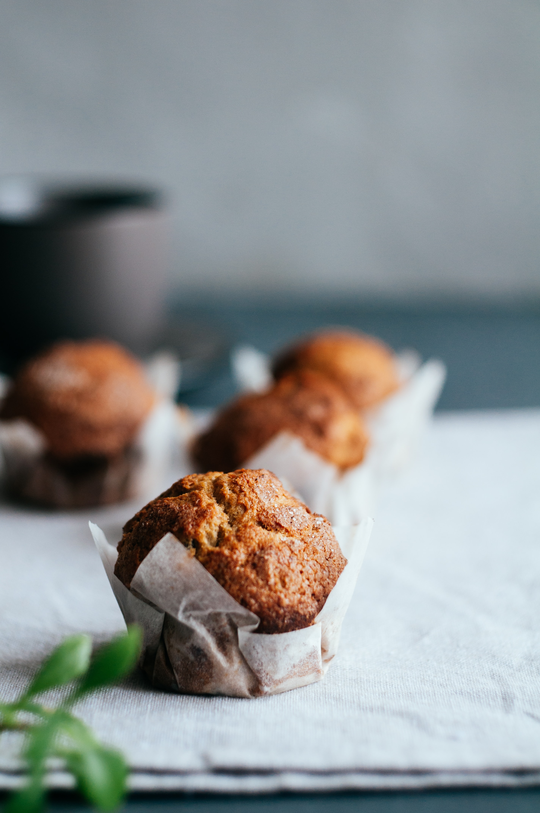

Muffins

Ingredienten
- 120 gram fijne kristalsuiker
- 300 gram bloem
- 1 tl bakpoeder
- 1 tl baking soda
- snufje zout
- 2 eieren (M)
- 250 ml melk
- 120 ml zonnebloemolie
- 2 tl vanille extract
Bereiding
- Het maken van muffins is kinderlijk eenvoudig, je hebt er geen eens een mixer voor nodig.
Doe de suiker, bloem, bakpoeder, baking soda en zout bij elkaar in een kom, roer even door met een spatel.
In een andere kom doe je de vochtige ingrediënten; eieren, melk, zonnebloemolie en vanille extract.
Klop dit met een garde door elkaar.
-
Voeg de inhoud van beide kommen bij elkaar en spatel door elkaar tot één geheel, dit mag best een beetje klonterig zijn.
- Neem een muffinvorm die je bekleed met muffin- of cupcakepapiertjes.
Met een ijslepel verdeel je het beslag over de vormpjes.
Bij muffins mag je de vormpjes best vol doen, ik vul ze zelf tot ongeveer een halve centimeter onder de rand.
Bak de muffins in 20 minuten op 200 °C (boven- en onderwarmte) gaar en goudbruin.